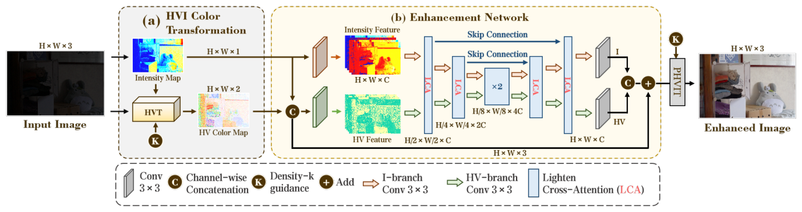
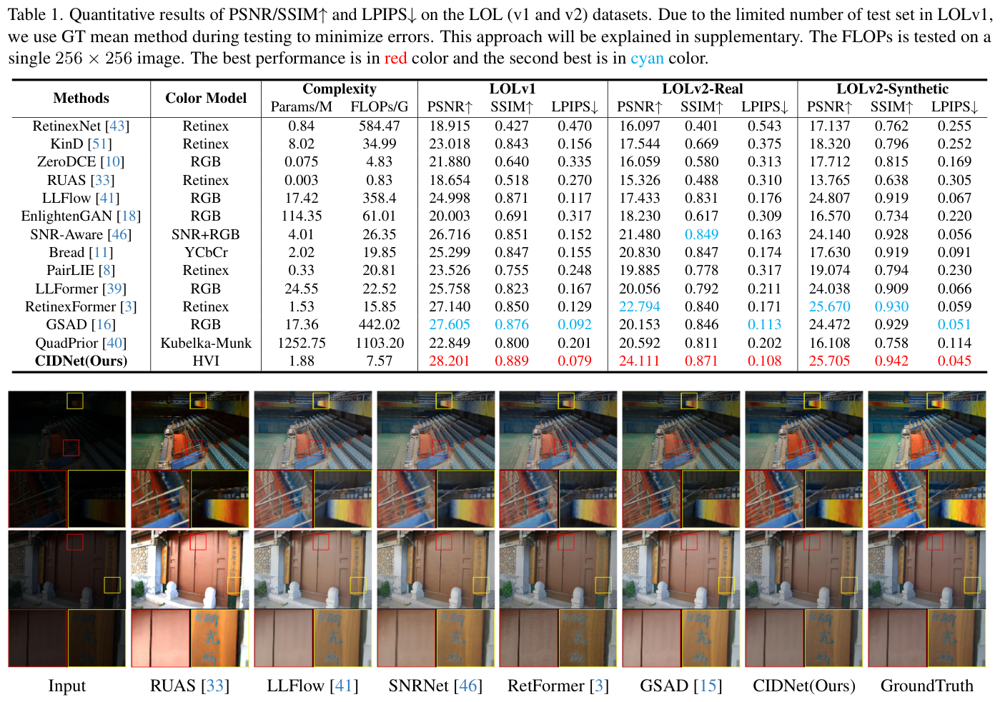
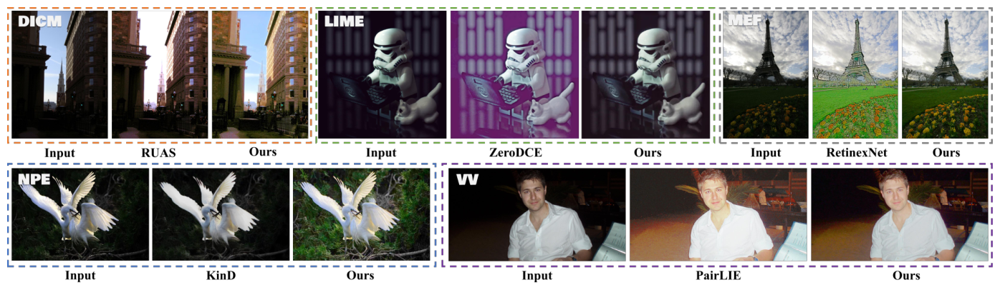
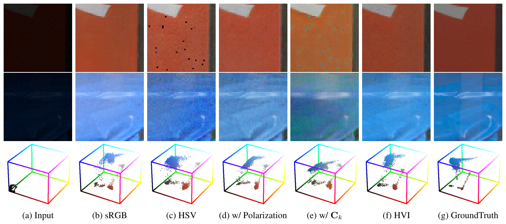
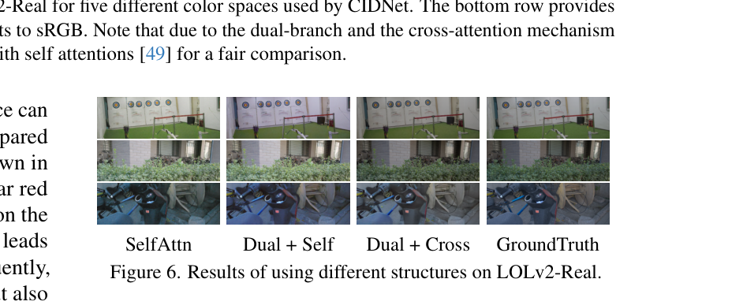

HVI: Một Không Gian Màu Mới Cho Tăng Cường Ảnh Thiếu Sáng
Hội nghị IEEE/CVF Computer Vision and Pattern Recognition (CVPR 2025)
HVI: Một Không gian Màu Mới cho Tăng cường Ảnh Thiếu sáng (HVI: A New Color Space for Low-light Image Enhancement)
Tác giả: Qingsen Yan$^{1*}$, Yixu Feng$^{1*}$, Cheng Zhang$^{1}$, Guansong Pang$^{2\dagger}$, Kangbiao Shi$^{1}$, Peng Wu$^{1}$ $^{1}$Đại học Bách khoa Tây Bắc (Northwestern Polytechnical University), Trung Quốc $^{2}$Đại học Kiến trúc và Công nghệ Tây An, Trung Quốc \Các tác giả đóng góp như nhau vào công trình này.* $^{\dagger}$Tác giả liên hệ.
Tóm tắt (Abstract)
Tăng cường ảnh thiếu sáng (Low-Light Image Enhancement - LLIE) là một tác vụ thị giác máy tính then chốt nhằm khôi phục thông tin thị giác chi tiết từ các hình ảnh thiếu sáng bị suy giảm chất lượng. Nhiều phương pháp LLIE hiện có dựa trên không gian màu RGB tiêu chuẩn (sRGB), vốn thường tạo ra độ lệch màu và các hiện tượng giả về độ sáng do độ nhạy màu cao cố hữu trong sRGB. Mặc dù việc chuyển đổi hình ảnh bằng không gian màu Sắc độ, Độ bão hòa và Giá trị (HSV) giúp giải quyết vấn đề độ sáng, nó lại tạo ra các hiện tượng nhiễu màu đỏ và đen đáng kể. Để giải quyết vấn đề này, chúng tôi đề xuất một không gian màu mới cho LLIE, mang tên Ngang/Dọc - Cường độ (Horizontal/Vertical-Intensity - HVI), được định nghĩa bởi các bản đồ HS phân cực và cường độ có thể học được. Thành phần phân cực áp đặt khoảng cách nhỏ cho các tọa độ màu đỏ để loại bỏ các hiện tượng giả màu đỏ, trong khi cường độ có thể học nén các vùng thiếu sáng để loại bỏ các hiện tượng giả màu đen. Để tận dụng tối đa thông tin sắc độ và cường độ, một Mạng Tách rời Màu sắc và Cường độ (Color and Intensity Decoupling Network - CIDNet) mới lạ được giới thiệu nhằm học hàm ánh xạ trắc quang chính xác dưới các điều kiện chiếu sáng khác nhau trong không gian HVI. Các kết quả toàn diện từ các thử nghiệm đánh giá chuẩn và nghiên cứu loại trừ cho thấy không gian màu HVI đề xuất kết hợp với CIDNet vượt trội hơn các phương pháp hiện đại nhất (SOTA) trên 10 bộ dữ liệu. Mã nguồn được công bố tại https://github.com/Fediory/HVI-CIDNet.
1. Giới thiệu (Introduction)
Dưới điều kiện thiếu sáng, các cảm biến hình ảnh thường thu nhận các tín hiệu ánh sáng yếu đi kèm nhiễu nghiêm trọng, dẫn đến chất lượng thị giác kém cho các hình ảnh chụp trong bóng tối. Việc thu được hình ảnh chất lượng cao từ những hình ảnh bị suy thoái như vậy đòi hỏi quy trình Tăng cường Ảnh Thiếu sáng (LLIE) nhằm cải thiện độ sáng của hình ảnh đồng thời giảm thiểu tác động của nhiễu và độ lệch màu [24].
Phần lớn các phương pháp LLIE hiện có [10, 15, 18, 35, 51, 55] tập trung vào việc tìm kiếm độ sáng hình ảnh phù hợp, điều này thường được thực hiện bằng cách sử dụng các mạng nơ-ron sâu để học mối quan hệ ánh xạ giữa ảnh thiếu sáng và ảnh đủ sáng trong không gian RGB tiêu chuẩn (sRGB). Tuy nhiên, độ sáng hình ảnh thể hiện sự liên kết chặt chẽ với màu sắc từ ba kênh sRGB, a.k.a. độ nhạy màu cao trong [9, 23], gây ra sự biến dạng màu sắc rõ rệt của hình ảnh được phục hồi trong các phương pháp LLIE này [3, 18], như thể hiện trong Hình 1(a).
Lấy cảm hứng từ lý thuyết Kubelka-Munk [9], các phương pháp gần đây [25, 52, 56] đã tìm cách chuyển đổi hình ảnh từ không gian màu sRGB sang không gian màu Sắc độ, Độ bão hòa và Giá trị (HSV). Các phương pháp này giúp đạt được sự tăng cường độ sáng chính xác hơn, nhưng chúng lại khuếch đại nhiễu không gian màu cục bộ [9], đưa vào các hiện tượng giả nghiêm trọng trong kết quả. Như minh họa trong Hình 1(b), việc chuyển đổi từ sRGB sang HSV phá vỡ tính liên tục của màu đỏ (① Nhiễu Gián đoạn Màu đỏ - Red Discontinuity Noise) và màu đen (② Nhiễu Mặt phẳng Đen - Black Plane Noise), dẫn đến khoảng cách Euclid gia tăng đối với các màu tương tự và xuất hiện các hiện tượng giả trong ảnh cuối cùng (xem các ảnh phóng to của $\mathcal{D}$ và $\Theta$). Hai loại nhiễu này có thể gây ra hiện tượng giả nghiêm trọng khi tăng cường các hình ảnh có màu đỏ chủ đạo hoặc cực kỳ tối.
Để giải quyết các vấn đề này, chúng tôi giới thiệu một không gian màu mới mang tên Ngang/Dọc - Cường độ (Horizontal/Vertical-Intensity - HVI), được thiết kế đặc thù cho tác vụ LLIE. Trực giác then chốt là giảm thiểu nhiễu không gian màu bằng cách giảm khoảng cách Euclid giữa các màu tương tự. Để đạt được mục đích này, chúng tôi phân cực trong mặt phẳng Sắc độ và Độ bão hòa (HS) để áp đặt các khoảng cách nhỏ hơn cho các tọa độ điểm đỏ tương tự, giúp loại bỏ nhiễu gián đoạn màu đỏ trong không gian HSV nguyên bản (xem Hình 1(c)). Đối với vấn đề nhiễu mặt phẳng đen, chúng tôi đưa vào một tham số mật độ bóng tối có thể huấn luyện $k$ và hàm thu hẹp cường độ thích ứng tương ứng $C _ { k } ,$, giúp nén bán kính của các vùng thiếu sáng về 0, với sự linh hoạt để mở rộng dần dần về giá trị 1 khi cường độ tăng lên, như được minh họa trong Hình 1(d). Điều này giúp loại bỏ các hiện tượng giả nhiễu đen trong khi vẫn duy trì diện mạo ban đầu của hình ảnh.
Chúng tôi đề xuất thêm một mạng nơ-ron LLIE, mang tên Mạng Tách rời Màu sắc và Cường độ (CIDNet), nhằm tận dụng thông tin sắc độ và cường độ để tối ưu hóa màu sắc và cường độ trong không gian HVI. Sau khi chuyển đổi hình ảnh sang không gian HVI, CIDNet tận dụng hai nhánh mạng, cụ thể là nhánh HV và nhánh cường độ, để mô hình hóa riêng biệt thông tin màu sắc và độ sáng đã được tách rời nhằm học ánh xạ trắc quang chính xác dưới các điều kiện chiếu sáng khác nhau và phục hồi màu sắc tự nhiên hơn.
![Hình 1: Hàng trên minh họa quá trình chuyển đổi hình ảnh từ không gian màu sRGB, qua HSV, sang không gian màu HVI. Hàng dưới trình bày các kết quả thử nghiệm tương ứng. Không gian màu sRGB có độ nhạy màu cao, thường gây biến dạng màu trong ảnh thử nghiệm. Bằng cách tách rời độ sáng và màu sắc để thu được không gian màu HSV, việc tăng cường độ sáng có vẻ được chuẩn hóa. Tuy nhiên, phép biến đổi này gây ra các mức độ gián đoạn màu đỏ và vùng đen khác nhau, sau đó gây ra hiện tượng giả trong ảnh tăng cường. Việc đưa phân cực vào HSV đảm bảo tính liên tục trong các vùng màu đỏ. Mặt khác, việc đưa vào hàm cường độ có thể học Ck giúp thu hẹp các vùng màu đen, mang lại không gian màu HVI với khả năng tăng cường hình ảnh tối ưu.](../assets/images/papers/hvi/figure_01.png)
Hình 1. Hàng trên minh họa quá trình chuyển đổi hình ảnh từ không gian màu sRGB, qua HSV, sang không gian màu HVI. Hàng dưới trình bày các kết quả thử nghiệm tương ứng. Không gian màu sRGB có độ nhạy màu cao, thường gây biến dạng màu trong ảnh thử nghiệm. Bằng cách tách rời độ sáng và màu sắc để thu được không gian màu HSV, việc tăng cường độ sáng có vẻ được chuẩn hóa. Tuy nhiên, phép biến đổi này gây ra các mức độ gián đoạn màu đỏ và vùng đen khác nhau, sau đó gây ra hiện tượng giả trong ảnh tăng cường. Việc đưa phân cực vào HSV đảm bảo tính liên tục trong các vùng màu đỏ. Mặt khác, việc đưa vào hàm cường độ có thể học $C_k$ giúp thu hẹp các vùng màu đen, mang lại không gian màu HVI với khả năng tăng cường hình ảnh tối ưu.
Các đóng góp của chúng tôi được tóm tắt như sau: - Chúng tôi giới thiệu không gian màu HVI mới cho tác vụ LLIE, được định nghĩa duy nhất bởi HS phân cực và cường độ có thể huấn luyện. Điều này cung cấp một công cụ hiệu quả giúp loại bỏ nhiễu không gian màu phát sinh từ không gian HSV, tăng cường đáng kể độ sáng của các hình ảnh thiếu sáng. - Chúng tôi đề xuất một mạng đường cơ sở LLIE mới lạ, CIDNet, để đồng thời mô hình hóa cường độ và sắc độ của ảnh thiếu sáng trong không gian HVI. Mặc dù nhẹ và hiệu quả tính toán với số lượng tham số tương đối nhỏ (1,88M) và tải tính toán thấp (7,57 GFLOPs), mô hình vẫn cho phép học ánh xạ trắc quang chính xác dưới các điều kiện chiếu sáng khác nhau. - Các kết quả toàn diện từ các thử nghiệm định lượng và định tính cho thấy phương pháp tiếp cận của chúng tôi vượt trội hơn nhiều phương pháp SOTA khác nhau trên nhiều chỉ số đánh giá xuyên suốt 10 bộ dữ liệu.
2. Các công trình liên quan (Related Works)
2.1. Các phương pháp Một giai đoạn (Single-stage Methods)
Các cách tiếp cận học sâu một giai đoạn [3, 5, 13, 18, 26, 51] đã được sử dụng rộng rãi trong LLIE. Các phương pháp hiện có đề xuất những giải pháp riêng biệt để giải quyết các vấn đề nêu trên. Chẳng hạn, RetinexNet [43] tăng cường hình ảnh bằng cách tách rời độ chiếu sáng và độ phản xạ dựa trên lý thuyết Retinex. Bread [11] tách rời sự vướng víu giữa nhiễu và biến dạng màu sắc bằng cách sử dụng không gian màu YCbCr. Hơn nữa, họ đã thiết kế một mạng thích ứng màu sắc để giải quyết vấn đề biến dạng màu còn sót lại trong các hình ảnh đã tăng cường độ sáng. Tuy nhiên, RetinexNet và Bread vẫn có thể bộc lộ sự kiểm soát không chính xác về độ sáng và làm lệch màu ở các vùng tối.
2.2. Các phương pháp Dựa trên Mô hình Khuếch tán (Diffusion-based Methods)
Với sự tiến bộ của Mô hình Xác suất Khuếch tán Khử nhiễu (DDPMs) [14], các mô hình tạo sinh dựa trên khuếch tán đã đạt được những kết quả đáng ghi nhận trong tác vụ LLIE. Chúng cho thấy khả năng tạo ra các hình ảnh chính xác và phù hợp hơn. Tuy nhiên, chúng vẫn bộc lộ các vấn đề như cháy sáng cục bộ hoặc lệch màu. Các phương pháp khuếch tán LLIE gần đây đã cố gắng giải quyết những thách thức này bằng cách kết hợp hiệu chỉnh độ sáng có giám sát toàn cục hoặc sử dụng các bộ hiệu chỉnh màu cục bộ [6, 16, 17, 40, 45, 54]. Các phương pháp khác như Diff-Retinex [48] xem xét lại lý thuyết Retinex với mô hình khuếch tán trong tác vụ LLIE, nhằm phân rã một hình ảnh thành độ rọi và độ phản xạ từ không gian màu sRGB. Tuy nhiên, các mô hình khuếch tán này thường không thể tách rời hoàn toàn thông tin độ sáng và màu sắc.
2.3. Các Không gian Màu trong Tăng cường Ảnh Thiếu sáng
- Không gian sRGB: Hiện nay, không gian màu được sử dụng phổ biến nhất là sRGB. Dựa trên cùng nguyên lý nhận biết thị giác của mắt người, sRGB được sử dụng rộng rãi trong các thiết bị hình ảnh kỹ thuật số [32]. Tuy nhiên, độ sáng và màu sắc hình ảnh thể hiện sự phụ thuộc lẫn nhau mạnh mẽ với ba kênh trong sRGB [9]. Một sự xáo trộn nhỏ trong không gian màu sẽ gây ra sự biến đổi rõ rệt ở cả độ sáng và màu sắc của hình ảnh được tạo ra. Do đó, sRGB không phải là không gian màu lý tưởng cho việc tăng cường ảnh thiếu sáng.
- Không gian HSV và YCbCr: Không gian màu HSV biểu diễn các điểm trong mô hình màu RGB bằng hệ tọa độ hình trụ [7]. Thật vậy, nó tách rời độ sáng và màu sắc của hình ảnh từ các kênh RGB. Tuy nhiên, tính gián đoạn của màu đỏ và nhiễu mặt phẳng đen đặt ra những thách thức đáng kể khi chúng ta tăng cường hình ảnh trong không gian màu HSV, dẫn đến sự xuất hiện của nhiều hiện tượng giả rõ rệt. Để khắc phục các vấn đề liên quan đến HSV, một số phương pháp [1, 11] cũng chuyển đổi hình ảnh sRGB sang không gian màu YCbCr, vốn có trục độ sáng ($Y$) và mặt phẳng màu phản xạ ($CbCr$). Mặc dù giải quyết được vấn đề gián đoạn chiều sắc độ của HSV, trục $Y$ vẫn bị liên kết một phần với mặt phẳng $CbCr$, dẫn đến hiện tượng lệch màu nghiêm trọng.
3. Phương pháp Đề xuất (Proposed Method)
Không gian HVI được xây dựng dựa trên không gian màu HSV, được đề xuất để giải quyết các vấn đề nhiễu không gian màu phát sinh từ không gian HSV. Trực giác cốt lõi trong HVI là các hình ảnh được phục hồi cần có chất lượng tri giác tốt cho các màu tương ứng, tức là các màu tương tự phải có khoảng cách Euclid nhỏ. Dưới đây, chúng tôi giới thiệu chi tiết về phép biến đổi HVI, trong đó không gian màu HSV trước tiên được áp dụng để tách rời thông tin độ sáng và màu sắc của ảnh đầu vào (vốn có thể gây ra nhiễu không gian màu như gián đoạn màu đỏ và mặt phẳng đen). Sau đó, chúng tôi giới thiệu các thao tác HS phân cực đề xuất và hàm thu hẹp cường độ có thể học được trong HVI để giải quyết triệt để các vấn đề này.
3.1. Không gian Màu HVI (HVI Color Space)
Bản đồ Cường độ (Intensity Map): Trong tác vụ LLIE, một khía cạnh then chốt là ước tính chính xác bản đồ cường độ chiếu sáng của khung cảnh từ một hình ảnh đầu vào sRGB. Các phương pháp trước đây [8, 43, 51] chủ yếu dựa vào lý thuyết Retinex [21], sử dụng học sâu để tạo trực tiếp bản đồ đủ sáng tương ứng. Mặc dù cách tiếp cận này phù hợp với các nguyên tắc thống kê, nó thường gặp khó khăn trong việc khớp với các quy luật vật lý và nhận thức của con người [9], dẫn đến khả năng khái quát hóa bị hạn chế [40]. Do đó, chúng tôi thay vào đó dựa vào lý thuyết Max-RGB [21] để ước tính bản đồ cường độ, còn gọi là Giá trị (Value) trong HSV, thay vì sử dụng mạng nơ-ron để tạo ra nó. Theo Max-RGB, đối với mỗi pixel riêng lẻ $x ,$, chúng tôi có thể ước tính bản đồ cường độ của một hình ảnh $\mathbf { I } _ { m a x } \in \mathbb { R } ^ { \mathrm { H \times W } }$ như sau:
Mặt phẳng Sắc độ/Độ bão hòa (Hue/Saturation Plane): Các hình ảnh thiếu sáng trong thế giới thực thường chứa nhiễu đáng kể, khiến việc nhận diện và loại bỏ nó trở thành một thách thức chính trong LLIE. Các nghiên cứu gần đây [43, 48] chỉ ra rằng nhiễu trong ảnh thiếu sáng là nguyên nhân chính dẫn đến sự thay đổi trong Sắc độ và Độ bão hòa, trong khi có tác động tối thiểu đến cường độ ánh sáng. Do đó, việc tách rời không gian màu sRGB có thể mang lại nhiều lợi thế cho tác vụ LLIE. Bằng cách tận dụng tính bất biến trắc quang dựa trên pixel [9] và mô hình phản xạ nhị sắc [34], sRGB có thể được tách rời thành các thành phần độ rọi và sắc độ, mang lại không gian màu HSV. Trong biểu diễn này, thành phần bản đồ Giá trị ($V$) tương ứng với bản đồ cường độ ánh sáng $( \mathbf { V } = \mathbf { I } _ { m a x } ) ,$, trong khi mặt phẳng HS tạo thành một mặt phẳng sắc độ độc lập với các ràng buộc về độ rọi. Cụ thể, phép biến đổi từ ảnh sRGB sang bản đồ Độ bão hòa ($S$) được định nghĩa như sau:
trong đó $\Delta = \mathbf { I } _ { m a x } - m i n ( \mathbf { I } _ { c } )$ và $\mathbf { s }$ là bất kỳ pixel nào trong $\mathbf { S } .$. Bản đồ Sắc độ ($H$) được xây dựng dưới dạng:
trong đó $h$ là pixel bất kỳ trong $H$.
1. Vì Sao sRGB và HSV Truyền Thống Thất Bại Thảm Hại Trong Bóng Đêm?
Tại sao việc tăng sáng ảnh trong không gian màu sRGB luôn làm đổi màu vật thể (ám vàng, bệt màu), còn chuyển sang HSV thì lại sinh ra "vết rách màu đỏ" và "nhiễu hạt mè sặc sỡ"?
Hãy tưởng tượng bạn đang chụp một chiếc đèn lồng đỏ treo bên bờ sông trong đêm tối:
1. Nếu xử lý trên sRGB: Không gian sRGB gộp chung cả màu sắc lẫn độ sáng vào 3 kênh $R, G, B$. Trong vùng tối, kênh $R$ có giá trị rất nhỏ (ví dụ 0.04), kênh $G, B$ gần như bằng 0 (0.005). Khi mạng nơ-ron cố gắng nhân hệ số khuếch đại lên 15 lần để làm sáng, chỉ cần một sai số nhỏ của thuật toán cũng biến màu đỏ tươi thành màu cam nhờ nhợt hoặc tím tái (hiện tượng Lệch màu sắc tố - Color Bias/Color Distortion).
2. Nếu chuyển sang không gian màu HSV: HSV khéo léo tách độ sáng ($V$) ra khỏi màu sắc ($H, S$). Nhưng HSV lại mắc phải 2 khuyết tật hình học chết người:
- Khuyết tật 1 - Vết Rách Màu Đỏ (Red Discontinuity): Trục góc màu $H$ chạy từ $0^\circ$ đến $360^\circ$ (hoặc từ $0$ đến $6$). Màu đỏ nằm ngay tại điểm giao thoa giữa $359^\circ$ và $1^\circ$ (tức $h=5.99$ và $h=0.01$). Về mặt thị giác người nhìn, hai sắc đỏ này giống hệt nhau. Nhưng về mặt toán học, khoảng cách Euclid giữa chúng lại cực lớn: $|5.99 - 0.01| = 5.98 \approx 6$! Khi mạng nơ-ron tính đạo hàm làm mịn, bước nhảy số học khổng lồ này xé toạc bề mặt đèn lồng đỏ thành những vệt rách màu đen xì!
- Khuyết tật 2 - Nhiễu Mặt Phẳng Đen (Black Plane Noise): Khi bóng đêm đen tuyền ($V \to 0$), mặt phẳng màu $HS$ trong HSV vẫn là một hình đĩa tròn đầy đủ. Ở vùng đen kịt này, các hạt nhiễu nhiệt cảm biến dù chỉ rung lắc nhẹ cũng khiến vector màu quay mòng mòng $360^\circ$, biến bóng đêm tĩnh mịch thành một bãi rác hạt mè đa sắc lốm đốm đỏ, xanh, vàng!
Bài báo HVI (CVPR 2025) ra đời để giải quyết tận gốc rễ 2 khuyết tật hình học này bằng công cụ toán học giải tích tuyệt mỹ.
| Thuật Ngữ Khoa Học | Công Thức / Khái Niệm | Giải Thích Trực Quan Dễ Hiểu | Ý Nghĩa Trong Đồ Án UIT |
|---|---|---|---|
| Red Discontinuity | Đứt gãy giá trị Sắc độ $H$ tại ngưỡng giao thoa $h=0$ và $h=6$. | Giống như thước đo vòng tròn bị cắt đôi: số 0 và số 360 nằm sát nhau nhưng trên thang đo số thẳng lại ở hai đầu xa tít tắp. | Nguyên nhân số 1 khiến các ảnh chụp đêm phục hồi bằng HSV bị vệt đen dọc ranh giới đèn đỏ. |
| Black Plane Noise | Bán kính đĩa màu $HS$ không thu hẹp khi cường độ sáng $V \to 0$. | Trong phòng tối đen như mực, nếu ai đó vẫn bắt ta chọn màu sắc thì ta chỉ có thể chỉ tay loạn xạ vào bảng màu. | Làm xuất hiện các chấm nhiễu màu sặc sỡ trong các hốc tối của bộ dữ liệu LOL. |
| Orthogonal Projection | Chiếu góc $h$ thành tọa độ phẳng $(\cos \frac{\pi h}{3}, \sin \frac{\pi h}{3})$. | Cuộn thẳng chiếc thước dây thành một vòng tròn khép kín, đưa hai đầu số 0 và 360 chạm vào nhau tại tọa độ $(1, 0)$. | Khoảng cách giữa hai sắc đỏ trở về 0 tuyệt đối, triệt tiêu hoàn toàn vết rách màu! |
| Intensity Shrink Function $C_k(x)$ | $C_k(x) = (\sqrt{\sin(\frac{\pi I_{max}}{2})})^k + \varepsilon$ | Chiếc phễu co thắt: Khi trời tối dần ($I_{max} \to 0$), phễu ép toàn bộ đĩa tròn màu bóp nghẹt về điểm gốc $(0, 0)$. | Dập tắt 100% hạt nhiễu màu trong bóng tối đen tuyệt đối. |
2. Bản Chất Toán Học Của Phép Biến Đổi Không Gian Màu HVI
Phép chiếu lượng giác và hàm lũy thừa $C_k(x)$ đã "chữa lành" những điểm dị biệt hình học của không gian màu như thế nào?
Để xóa bỏ bước nhảy gián đoạn tại biên giới màu đỏ, tác giả Yan et al. không dùng giá trị góc $h \in [0, 6)$ một cách trần trụi, mà chiếu $h$ lên hai trục tọa độ trực giao:
Hãy kiểm tra tính liên tục tại hai điểm đỏ sát nhau:
- Tại $h = 0$: $(h_{proj}, v_{proj}) = (\cos 0, \sin 0) = (1, 0)$.
- Tại $h = 6$: $(h_{proj}, v_{proj}) = (\cos 2\pi, \sin 2\pi) = (1, 0)$.
Khoảng cách Euclid giữa hai điểm đỏ trên mặt phẳng trực giao là $\sqrt{(1 - 1)^2 + (0 - 0)^2} = 0$! Không còn bất kỳ sự gián đoạn nào. Hàm cos và sin có đạo hàm liên tục trơn tru trên toàn bộ tập số thực $\mathbb{R}$, giúp gradient truyền ngược hoàn hảo qua mạng nơ-ron mà không bao giờ bị bùng nổ đạo hàm (Gradient Explosion).
Mặt phẳng màu hoàn chỉnh trong HVI được định nghĩa bằng phép nhân từng phần tử giữa ba thành phần:
Trong đó $C_k(x) = \left(\sqrt{\sin\left(\frac{\pi I_{max}(x)}{2}\right)}\right)^k + \varepsilon$. Vai trò của từng đại lượng:
- Khi điểm ảnh ở vùng rất sáng ($I_{max} \to 1$): $\sin(\frac{\pi}{2}) = 1$, do đó $C_k \to 1$. Mặt phẳng màu giữ nguyên độ rộng và độ bão hòa rực rỡ ban đầu.
- Khi điểm ảnh ở vùng tối đen như mực ($I_{max} \to 0$): $\sin(0) = 0$, do đó $C_k \to 0$. Bán kính của toàn bộ đĩa màu bị ép chặt về $0$, triệt tiêu hoàn toàn mọi vector nhiễu ngẫu nhiên!
- Hệ số $k$ là một tham số có thể học được (learnable parameter) trong quá trình backpropagation, giúp mạng tự động cân chỉnh độ dốc co thắt tùy theo mức độ tối của từng bộ dữ liệu.
Nhiễu Không gian Màu (Color Space Noises): Việc chuyển đổi hình ảnh sRGB sang không gian HSV giúp tách rời hiệu quả độ sáng khỏi màu sắc, cho phép khử nhiễu màu chính xác hơn và phục hồi độ rọi tự nhiên hơn. Tuy nhiên, phép biến đổi này cũng khuếch đại nhiễu ở các vùng màu đỏ và vùng tối [9], vốn là những vùng tối quan trọng đối với các tác vụ LLIE. Như minh họa trong Hình 1(b), việc tăng cường độ sáng hình ảnh trong không gian màu HSV mang lại mức độ sáng cân bằng hơn. Tuy nhiên, nhiễu quá mức ở các điểm gián đoạn màu đỏ và mặt phẳng đen tạo ra các hiện tượng giả đáng kể, đặc biệt là ở các vùng đỏ và tối của ảnh đầu ra, làm suy giảm nghiêm trọng chất lượng cảm nhận.
Để giải quyết vấn đề này, chúng tôi đề xuất không gian màu HVI như sau, vừa bảo toàn hiệu quả việc phân tách độ sáng và màu sắc vừa giảm thiểu tối đa các hiện tượng giả này.
Cách tiếp cận chính của chúng tôi để giải quyết vấn đề nhiễu không gian màu là đảm bảo rằng các màu tương tự nhau hơn sẽ thể hiện khoảng cách Euclid nhỏ hơn. Dọc theo trục Sắc độ (Hue), màu đỏ xuất hiện giống hệt nhau ở cả $\mathbf { h } = 0$ và $\mathbf { h } = \, 6 , \,$ do phép tính đồng dư modulo của trục Hue, vốn chia cắt cùng một màu sắc thành hai đầu của quang phổ. Cụ thể, để giải quyết vấn đề gián đoạn màu đỏ, chúng tôi áp dụng phép phân cực cho trục Sắc độ ($h$) tại mỗi pixel trong $\mathbf { H } ,$, thu được các thành phần trực giao $h =$ $\cos ( \frac { \pi \mathrm { h } } { 3 } )$ và $v = \sin ( \frac { \pi \mathrm { h } } { 3 } ) .$:
Khi trục Sắc độ được phân cực, nó tạo thành một góc bên trong mặt phẳng trực giao $h - v$, với $s$ đại diện cho khoảng cách từ gốc tọa độ.
Đối với vấn đề nhiễu mặt phẳng đen, chúng tôi nhằm mục đích thu gọn (collapse) các vùng có cường độ ánh sáng thấp trong khi vẫn bảo toàn các vùng có cường độ cao hơn. Tuy nhiên, mức độ thu gọn tối ưu thay đổi trên các tập dữ liệu và mạng nơ-ron khác nhau. Do đó, việc làm cho vùng này có thể thu gọn một cách thích ứng thông qua quá trình học tập là vô cùng quan trọng. Để đạt được điều này, chúng tôi giới thiệu một hàm thu hẹp cường độ thích ứng $\mathbf { C } _ { k }$ như sau:
trong đó $k \in \mathbb { Q } ^ { + }$ là một tham số có thể huấn luyện để kiểm soát mật độ điểm màu tối, và một giá trị nhỏ $\varepsilon = 1 \! \times \! 1 0 ^ { - 8 }$ được sử dụng để tránh hiện tượng bùng nổ gradient. Về bản chất, $\mathbf { C } _ { k }$ đóng vai trò như một hàm ánh xạ bán kính, với $\mathbf { C } _ { k }$ nhỏ hơn tương ứng với bán kính nhỏ hơn hoặc các giá trị cường độ thấp hơn. Do đó, các điểm đen được gom cụm lại với nhau khi $\mathbf { C } _ { k }$ giảm. Sau đó, chúng tôi hình thức hóa bản đồ Ngang (Horizontal - $\mathbf{\hat{H}}$) và bản đồ Dọc (Vertical - $\mathbf{\hat{V}}$) như sau:
trong đó $h \, \in \, H , \, v \, \in \, V , \,$ và $\odot$ biểu thị phép nhân từng phần tử. $\mathbf { \hat { H } } ,$, $\mathbf { \hat { V } } ,$ và $\mathbf { I } _ { m a x }$ có thể được nối kết với nhau để tạo thành một hình ảnh HVI hoàn chỉnh.
Nhờ các thao tác này, không gian HVI xây dựng một không gian màu mạnh mẽ duy trì các ưu điểm của HSV đồng thời loại bỏ triệt để nhiễu màu đỏ và đen. Quan trọng hơn, vì HVI có thể huấn luyện được nhờ $k$ và $\mathbf { C } _ { k } ,$, các mạng nơ-ron được thiết kế chuyên biệt có thể được xây dựng để tối ưu hóa LLIE trên HVI dưới nhiều điều kiện chiếu sáng khác nhau.

Hình 2. Tổng quan về mạng CIDNet đề xuất. (a) Phép biến đổi Màu HVI (HVIT) nhận ảnh sRGB làm đầu vào và tạo ra bản đồ màu HV cùng bản đồ cường độ làm đầu ra. (b) Mạng Tăng cường thực hiện quá trình xử lý chính, sử dụng kiến trúc UNet hai nhánh với sáu khối Chú ý Chéo Tăng sáng (LCA). Cuối cùng, chúng tôi áp dụng phép biến đổi HVI nghịch đảo tri giác (PHVIT) để nhận bản đồ HVI đã tăng sáng và chuyển đổi thành ảnh tăng cường sRGB.
3.2. Mạng Tách rời Màu sắc và Cường độ (CIDNet)
Để sử dụng hiệu quả hơn thông tin sắc độ và độ sáng trong không gian HVI, chúng tôi giới thiệu một mạng nơ-ron LLIE hai nhánh mới, mang tên Mạng Tách rời Màu sắc và Cường độ (CIDNet), để mô hình hóa riêng biệt thông tin mặt phẳng HV và trục cường độ $I$ trong không gian HVI, như thể hiện trong Hình 2. CIDNet sử dụng nhánh HV để triệt tiêu nhiễu và sắc độ ở các vùng tối, đồng thời sử dụng nhánh $I$ để ước lượng độ rọi của toàn bộ hình ảnh.
Khung làm việc tổng thể của CIDNet có thể được chia thành ba bước chính liên tiếp: Phép biến đổi HVI được áp dụng trước mạng tăng cường hai nhánh. Sau khi tăng cường, CIDNet thực hiện phép biến đổi HVI nghịch đảo tri giác để ánh xạ hình ảnh trở lại không gian sRGB.
Phép biến đổi HVI (HVI Transformation): Phép biến đổi HVI phân rã hình ảnh sRGB thành hai thành phần: bản đồ cường độ chứa thông tin độ rọi của khung cảnh và bản đồ màu HV chứa thông tin màu sắc và cấu trúc của khung cảnh. Cụ thể, trước tiên chúng tôi tính toán bản đồ cường độ bằng Phương trình (1), tức là $\mathbf { I _ { I } } = \mathbf { I } _ { m a x } .$. Sau đó, chúng tôi sử dụng bản đồ cường độ và hình ảnh gốc để tạo bản đồ màu HV bằng Phương trình (5). Hơn nữa, tham số mật độ $k$ có thể huấn luyện được sử dụng để điều chỉnh mật độ điểm màu của mặt phẳng màu cường độ thấp, như thể hiện trong Hình 2(a).
Mạng Tăng cường Hai nhánh (Dual-branch Enhancement Network): Như được minh họa trong Hình 2(b), mạng hai nhánh được xây dựng trên kiến trúc UNet, bao gồm một bộ mã hóa và một bộ giải mã với ba module Chú ý Chéo Tăng sáng (Lighten Cross-Attention - LCA) tương ứng, cùng nhiều kết nối tắt. Hai thiết kế then chốt trong mạng là cấu trúc hai nhánh và module LCA: 1. Tác vụ LLIE có thể được phân rã thành hai tác vụ con: loại bỏ nhiễu ở các vùng thiếu sáng và tăng cường độ sáng. Bằng cách chuyển đổi hình ảnh sang không gian màu HVI (nơi độ chói và màu sắc được tách rời), chúng tôi có thể áp dụng ánh xạ độ sáng cho bản đồ Cường độ và khử nhiễu cho bản đồ màu HV. Vì hai tác vụ con này tuân theo các quy luật thống kê riêng biệt [24], lấy cảm hứng từ các phương pháp dựa trên Retinex [8, 43, 44], chúng tôi sử dụng các nhánh riêng biệt - nhánh $I$ và nhánh HV - để giải quyết từng tác vụ con một cách độc lập. Ngoài ra, đầu vào của nhánh HV được hình thành bằng cách nối kết bản đồ Cường độ với bản đồ màu HV, vì chúng tôi quan sát thấy rằng các hình ảnh thiếu sáng nghiêm trọng cũng chứa một lượng nhỏ nhiễu trong thành phần độ chói. 2. Cơ chế chú ý chéo giữa hai nhánh được sử dụng, thay vì áp dụng cơ chế tự chú ý (self-attention) riêng lẻ cho từng nhánh. Một lý do chính là cường độ chiếu sáng tỷ lệ nghịch với cường độ nhiễu hình ảnh. Một hình ảnh thiếu sáng cũng có thể chứa các vùng có độ chiếu sáng cao chỉ cần khử nhiễu và tăng cường tối thiểu. Do đó, việc sử dụng các đặc trưng cường độ để dẫn hướng nhánh HV trong việc khử nhiễu có thể giảm độ lệch màu toàn cục và đạt được sự triệt tiêu nhiễu hiệu quả hơn. Mặt khác, thông tin cường độ bị nhiễu, sau khi được khử nhiễu trong nhánh HV, sẽ được chuyển sang nhánh $I$ thông qua cơ chế chú ý chéo, mang lại kết quả tăng cường mượt mà hơn.
Phép biến đổi HVI Nghịch đảo Tri giác (Perceptual-inverse HVI Transformation - PHVIT): Để chuyển đổi HVI trở lại không gian màu HSV, chúng tôi thực hiện PHVIT, một phép ánh xạ toàn ánh cho phép điều chỉnh độc lập độ bão hòa và độ sáng của hình ảnh.
PHVIT thiết lập $\hbar$ và $\hat { v }$ làm biến trung gian theo công thức:
trong đó $\varepsilon = 1 \times 1 0 ^ { - 8 }$ được sử dụng để tránh bùng nổ gradient. Sau đó, chúng tôi chuyển đổi $\hbar$ và $\hat { v }$ sang không gian màu HSV. Bản đồ Sắc độ ($\mathbf{H}$), Độ bão hòa ($\mathbf{S}$) và Giá trị ($\mathbf{V}$) có thể được ước tính như sau:
trong đó $\alpha_S, \alpha_I$ là các tham số tùy chỉnh tuyến tính để thay đổi độ bão hòa màu và độ sáng của hình ảnh. Cuối cùng, chúng tôi thu được hình ảnh sRGB từ hình ảnh HSV [7].
Hàm Mất mát Đa Không gian (Multi-space Loss Function): Để cung cấp sự giám sát toàn diện cho việc huấn luyện CIDNet, chúng tôi dẫn hướng quá trình tăng cường từ hai góc độ chính: Ground Truth trong không gian sRGB và bản đồ HVI trong không gian HVI. Cụ thể, cho bản đồ HVI tăng cường $\mathbf { I } _ { \mathrm { H V I } }$ và ảnh sRGB phục hồi $\mathbf { I }$ xuất ra từ CIDNet, chúng tôi hướng tới việc giảm thiểu sự khác biệt của chúng so với Ground Truth sRGB gốc $I$ và bản đồ HVI tương ứng $I_{HVI}$:
trong đó $\lambda$ là một siêu tham số trọng số để cân bằng các hàm mất mát trong hai không gian màu khác nhau. Điều này giúp không chỉ bám sát hơn phân phối xác suất của sRGB trong không gian HVI (đặc biệt là vùng màu đỏ và màu đen nhờ tối ưu hóa $C_k$) mà còn kế thừa các chi tiết cấu trúc cấp độ pixel trong không gian sRGB.
4. Thực nghiệm (Experiments)
Chúng tôi sử dụng bảy bộ dữ liệu chuẩn LLIE thường dùng để đánh giá, bao gồm LOLv1 [43], LOLv2 [47], DICM [22], LIME [12], MEF [28], NPE [38], và VV [36]. Chúng tôi cũng tiến hành các thử nghiệm sâu hơn trên hai bộ dữ liệu cực đoan: SICE [2] (chứa các tập kiểm thử mix và grad [53]) và SID (Sony-Total-Dark) [4].
3. Mạng CIDNet (1.88M Params): Đỉnh Cao Của Sự Tinh Gọn & Tương Tác Chéo
Làm thế nào mạng CIDNet chỉ với 1.88 triệu tham số lại đánh bại các mô hình Transformer hàng chục triệu tham số trên cả 10 bộ dữ liệu benchmark?
Các mô hình truyền thống thường ném toàn bộ 3 kênh ảnh vào một khối mạng khổng lồ và bắt mạng phải vừa học tăng sáng vừa học khử nhiễu. CIDNet chia để trị (Divide-and-Conquer) một cách thông minh:
| Thành Phần | Nhánh Cường Độ Sáng ($I$ Branch) | Nhánh Màu Sắc Khử Nhiễu ($HV$ Branch) |
|---|---|---|
| Đầu vào xử lý | Bản đồ cường độ cực đại $I_{max}(x) = \max(R, G, B)$ (1 kênh). | Bản đồ màu trực giao $\mathbf{\hat{H}}, \mathbf{\hat{V}}$ kết hợp với $I_{max}$ (3 kênh). |
| Nhiệm vụ vật lý | Học ánh xạ độ sáng phi tuyến: kéo vùng tối lên mức sáng tự nhiên, cân bằng dải động (Dynamic Range). | Khử sạch hạt nhiễu cảm biến, khôi phục sắc độ chân thực của vật thể mà không làm lệch tông màu. |
| Cơ chế tương tác | Lighten Cross-Attention (LCA): Nhánh độ sáng $I$ cung cấp bản đồ hướng dẫn cho nhánh $HV$ biết đâu là vùng đủ sáng để không khử nhầm chi tiết; ngược lại nhánh $HV$ đã sạch nhiễu truyền thông tin ngược lại giúp nhánh $I$ kéo sáng mịn màng không bị rỗ hạt. | |
4.1. Thiết lập Thực nghiệm (Experiment Settings)
- Tập dữ liệu LOL: Bộ dữ liệu LOL gồm các phiên bản v1 [43] và v2 [47]. So với LOL-v1 (chứa cả dữ liệu thực tế và tổng hợp), LOL-v2 được chia thành hai tập con riêng biệt: thực tế (real) và tổng hợp (synthetic). Đối với LOLv1 và LOLv2-Real, chúng tôi cắt các ảnh huấn luyện thành các mẩu có kích thước $4 0 0 \times 4 0 0$ và huấn luyện CIDNet trong 1.500 epoch với kích thước batch là 8. Đối với LOLv2-Synthetic, chúng tôi đặt kích thước batch là 1 và huấn luyện CIDNet trong 500 epoch mà không thực hiện cắt mẩu ảnh.
- Tập dữ liệu SICE: Bộ dữ liệu SICE gốc [2] chứa 589 hình ảnh thiếu sáng và thừa sáng, với các tập huấn luyện, xác thực và kiểm thử được chia thành ba nhóm theo tỷ lệ 7:1:2. CIDNet được tối ưu hóa bằng cách sử dụng $1 6 0 \times 1 6 0$ ảnh được cắt từ tập huấn luyện trong 1.000 epoch với kích thước batch là 10 và được kiểm thử trên các tập dữ liệu SICE-Mix và SICE-Grad [53].
- Tập dữ liệu Sony-Total-Dark: Bộ dữ liệu này là phiên bản tùy chỉnh từ tập con SID [4]. Để làm cho tập dữ liệu này mang tính thách thức cao hơn, chúng tôi chuyển đổi các hình ảnh định dạng thô (raw) sang hình ảnh sRGB mà không áp dụng hiệu chỉnh gamma, tạo ra các hình ảnh có độ tối cực độ. Chúng tôi cắt các hình ảnh huấn luyện thành các mẩu $2 5 6 \times 2 5 6$ và huấn luyện CIDNet trong 1.000 epoch với kích thước batch là 4.
- Cấu hình Thực nghiệm: Chúng tôi triển khai CIDNet bằng PyTorch. Mô hình được huấn luyện bằng bộ tối ưu hóa Adam [19] với với $(\beta_1 = 0.9, \beta_2 = 0.999)$ sử dụng một GPU NVIDIA RTX 2080Ti hoặc $3 0 9 0$ GPU. Tốc độ học ban đầu được đặt thành $1 \! \times \! 1 0 ^ { - 4 }$ và sau đó giảm dần đều về $1 \times 1 0 ^ { - 7 }$ theo cơ chế cosine annealing [27] trong suốt quá trình huấn luyện.
- Chỉ số Đánh giá: Đối với các bộ dữ liệu có cặp (paired datasets), chúng tôi áp dụng Tỷ số Tín hiệu trên Nhiễu Đỉnh (PSNR) và Độ tương đồng Cấu trúc (SSIM) [42] làm các chỉ số đo độ méo. Để đánh giá toàn diện chất lượng cảm nhận của các hình ảnh được phục hồi, chúng tôi báo cáo Độ tương đồng Vùng ảnh Tri giác Học được (LPIPS) [50] với AlexNet [20] làm mô hình tham chiếu. Đối với các bộ dữ liệu không có cặp (unpaired datasets), chúng tôi đánh giá các hình ảnh phục hồi đơn lẻ theo phương diện cảm nhận bằng BRISQUE [29] và NIQE [30].
Bảng 1: Kết quả định lượng của PSNR/SSIM↑ và LPIPS↓ trên các bộ dữ liệu LOL (v1 và v2)
Do số lượng tập kiểm thử trong LOLv1 có hạn, chúng tôi sử dụng phương pháp lấy trung bình GT trong quá trình kiểm thử để giảm thiểu sai số. FLOPs được đo trên một hình ảnh đơn lẻ kích thước $2 5 6 \times 2 5 6$. Kết quả tốt nhất được in đậm (bold).
| Phương pháp (Methods) | Mô hình Màu | Tham số (M) | FLOPs (G) | LOLv1 PSNR↑ | SSIM↑ | LPIPS↓ | LOLv2-Real PSNR↑ | SSIM↑ | LPIPS↓ | LOLv2-Synthetic PSNR↑ | SSIM↑ | LPIPS↓ |
|---|---|---|---|---|---|---|---|---|---|---|---|---|
| RetinexNet [43] | Retinex | 0.84 | 584.47 | 18.915 | 0.427 | $0 . 4 7 0$ | 16.097 | 0.401 | 0.543 | 17.137 | $0 . 7 6 2$ | 0.255 |
| KinD [51] | Retinex | 8.02 | 34.99 | 23.018 | 0.843 | 0.156 | 17.544 | 0.669 | 0.375 | 18.320 | 0.796 | 0.252 |
| ZeroDCE [10] | RGB | 0.075 | 4.83 | 21.880 | $0 . 6 4 0$ | 0.335 | 16.059 | 0.580 | 0.313 | 17.712 | 0.815 | 0.169 |
| RUAS [33] | Retinex | $0 . 0 0 3$ | $0 . 8 3$ | 18.654 | $0 . 5 1 8$ | $0 . 2 7 0$ | 15.326 | 0.488 | $0 . 3 1 0$ | 13.765 | 0.638 | 0.305 |
| LLFlow [41] | RGB | 17.42 | 358.40 | 24.998 | 0.871 | 0.117 | 17.433 | 0.831 | 0.176 | 24.807 | 0.919 | 0.067 |
| EnlightenGAN [18] | RGB | 61.01 | 114.35 | 20.003 | 0.691 | 0.317 | 18.230 | 0.617 | 0.309 | 16.570 | 0.734 | 0.220 |
| SNR-Aware [46] | SNR+RGB | 4.01 | 26.35 | 26.716 | $0 . 8 5 1$ | 0.152 | 21.480 | 0.849 | 0.163 | 24.140 | 0.928 | $0 . 0 5 6$ |
| Bread [11] | YCbCr | $2 . 0 2$ | 19.85 | 25.299 | 0.847 | 0.155 | 20.830 | $0 . 8 4 7$ | 0.174 | 17.630 | 0.919 | $0 . 0 9 1$ |
| PairLIE [8] | Retinex | 0.33 | 20.81 | 23.526 | 0.755 | 0.248 | 19.885 | 0.778 | $0 . 3 1 7$ | 19.074 | 0.794 | 0.230 |
| LLFormer [39] | RGB | 24.55 | 22.52 | 25.758 | 0.823 | 0.167 | 20.056 | $0 . 7 9 2$ | 0.211 | 24.038 | 0.909 | 0.066 |
| RetinexFormer [3] | Retinex | $1 . 5 3$ | 15.85 | 27.140 | 0.850 | 0.129 | 22.794 | $0 . 8 4 0$ | 0.171 | 25.670 | 0.930 | 0.059 |
| GSAD [16] | RGB | 17.36 | 442.02 | 27.605 | 0.876 | 0.092 | 20.153 | 0.846 | 0.113 | 24.472 | 0.929 | 0.051 |
| QuadPrior [40] | Kubelka-Munk | 1252.75 | 1103.20 | 22.849 | 0.800 | $0 . 2 0 1$ | 20.592 | 0.811 | 0.202 | 16.108 | $0 . 7 5 8$ | 0.114 |
| **CIDNet (Ours)** | **HVI** | **$1 . 8 8$** | **7.57** | **28.201** | **0.889** | **0.079** | **24.111** | **0.871** | **0.108** | **25.705** | **0.942** | **0.045** |

Hình 3. So sánh trực quan các hình ảnh tăng cường được tạo ra bởi các phương pháp SOTA khác nhau trên LOLv1 (hàng trên) và LOLv2 (hàng dưới).
Bảng 2: Kết quả định lượng trên SICE, Sony-Total-Dark và năm bộ dữ liệu không ghép cặp (DICM, LIME, MEF, NPE và VV)
Điểm số xếp hạng cao nhất được in đậm (bold).
| Phương pháp (Methods) | SICE PSNR↑ | SSIM↑ | Sony-Total-Dark PSNR↑ | SSIM↑ | Không ghép cặp (Unpaired) BRISQUE↓ | NIQE↓ |
|---|---|---|---|---|---|---|
| RetinexNet [43] | 12.424 | 0.613 | 15.695 | 0.395 | 23.286 | 4.558 |
| ZeroDCE [10] | 12.452 | 0.639 | 14.087 | 0.090 | 26.343 | 4.763 |
| URetinexNet [44] | 10.899 | 0.605 | 15.519 | $0 . 3 2 3$ | $3 . 8 2 9$ | 26.359 |
| RUAS [33] | 8.656 | 0.494 | 12.622 | 0.081 | 36.372 | 4.800 |
| LLFlow [41] | 12.737 | 0.617 | $1 6 . 2 2 6$ | 0.367 | 28.087 | 4.221 |
| **CIDNet (Ours)** | **13.435** | **0.642** | **22.904** | **$0 . 6 7 6$** | **23.521** | **3.523** |
4.2. Kết quả trên các Bộ dữ liệu
- Kết quả trên các bộ dữ liệu LOL: Trong Bảng 1, có thể thấy phương pháp của chúng tôi đạt tối ưu trên tất cả các chỉ số cho cả hai bộ dữ liệu LOLv1 và LOLv2 chỉ với 1,88M tham số và 7,57 GFLOPs. Chúng tôi vượt trội hơn phương pháp dựa trên RGB tốt nhất là GSAD (mô hình khuếch tán) trên toàn bộ các chỉ số PSNR, SSIM và LPIPS, trong khi chỉ sử dụng $1 0 . 8 \%$ số lượng tham số của GSAD. So với RetinexFormer (phương pháp SOTA dựa trên lý thuyết Retinex), CIDNet mang lại chất lượng hình ảnh cao hơn đồng thời giảm chi phí tính toán 8,28 GFLOPs. Kết quả định tính được minh họa trong Hình 3, chứng minh rằng phương pháp của chúng tôi không chỉ khôi phục chính xác hơn các vùng đa màu sắc so với Ground Truth mà còn đạt được sự tăng cường độ sáng ổn định nhờ không gian màu HVI.
- Kết quả trên SICE và Sony-Total-Dark: Để xác thực hiệu suất trên các bộ dữ liệu quy mô lớn, chúng tôi đánh giá CIDNet trên SICE (bao gồm Mix và Grad) và SID-Total-Dark. Kết quả được trình bày trong Bảng 2, thể hiện rõ ràng rằng CIDNet là mô hình thể hiện tốt nhất ở cả hai chỉ số PSNR và SSIM trên cả hai bộ dữ liệu. Đáng chú ý, trên Sony-Total-Dark, mô hình của chúng tôi vượt qua phương pháp đứng thứ hai tới 6,678 dB về PSNR. Sự cải thiện này đến từ độ tối cực đoan của các hình ảnh trong bộ dữ liệu, vốn làm tăng đáng kể độ khó trong việc phân biệt chi tiết với nhiễu. Tuy nhiên, CIDNet tận dụng hàm thu hẹp cường độ $\mathbf { C } _ { k }$ để duy trì hiệu quả tỷ số tín hiệu trên nhiễu tối ưu trong quá trình huấn luyện, cho phép khôi phục chi tiết tốt hơn.
- Kết quả trên các bộ dữ liệu Không ghép cặp: Chúng tôi đánh giá hiệu quả của các mô hình được huấn luyện trên LOLv1 hoặc LOLv2-Syn bằng nhiều phương pháp khác nhau và báo cáo hiệu suất của chúng bằng các chỉ số BRISQUE và NIQE trong Bảng 2. Phương pháp của chúng tôi thể hiện sự cải thiện đáng kể ở chỉ số NIQE so với các cách tiếp cận khác. Như thể hiện trong Hình 4, mặc dù CIDNet không vượt qua RetinexNet ở chỉ số BRISQUE trong Bảng 2, kết quả cảm nhận được phục hồi của nó gần với diện mạo thực tế hơn so với RetinexNet. Điều này có thể là do việc xây dựng dựa trên không gian HSV giúp không gian màu HVI bắt nguồn từ các mô hình tri giác trong thế giới thực [9].

Hình 4. So sánh trực quan trên năm bộ dữ liệu không ghép cặp. Theo RetinexFormer [3], chúng tôi chọn một hình ảnh trong mỗi bộ dữ liệu để so sánh phương pháp của mình với các phương pháp khác.
Bảng 3: Kết quả áp dụng phép biến đổi HVI dưới dạng một module cắm-và-chạy (plug-in) vào các phương pháp LLIE khác nhau trên LOLv2-Real
Các giá trị trong ngoặc biểu thị mức cải thiện hiệu suất tuyệt đối đạt được. PSNR/SSIM↑, LPIPS↓ và thời gian suy luận GPU↓ tốt nhất được in đậm (bold).
| Phương pháp (Methods) | Kiểu Mô hình (Model Type) | PSNR↑ | SSIM↑ | LPIPS↓ | Thời gian GPU (s)↓ |
|---|---|---|---|---|---|
| FourLLIE [37] | CNN | 22.730 (+0.381) | 0.856 (+0.009) | 0.125 (+0.011) | 0.075 |
| LEDNet [57] | CNN | 23.394 (+3.456) | 0.837 (+0.010) | 0.115 (-0.005) | 0.054 |
| SNR-Aware [46] | Transformer | 22.251 (+0.771) | 0.840 (-0.009) | 0.117 (-0.054) | 0.070 |
| LLFormer [39] | Transformer | 22.671 (+2.615) | 0.852 (+0.060) | 0.117 (-0.094) | 0.139 |
| GSAD [15] | Diffusion | 23.715 (+3.562) | 0.876 (+0.030) | 0.103 (-0.010) | 0.315 |
| DiffLight [6] | CNN+Diffusion | 23.969 (+1.364) | 0.859 (+0.003) | 0.109 (-0.012) | 0.578 |
| **CIDNet (Ours)** | **Transformer** | **24.111** | **$0 . 8 7 1$** | **0.108** | **0.053** |
4.3. Khả năng Khái quát hóa của HVI sang các Mô hình LLIE khác
Để xác minh tính hiệu quả của không gian màu HVI, chúng tôi đánh giá sâu hơn hiệu suất của nó khi được sử dụng với các mô hình LLIE khác nhau. Cụ thể, HVIT cùng với ánh xạ nghịch đảo PHVIT của nó được sử dụng như một module cắm-và-chạy (plug-and-play) vào sáu phương pháp SOTA sử dụng ảnh sRGB làm đầu vào. Kết quả được báo cáo trong Bảng 3. Rõ ràng là việc chuyển đổi sang không gian màu HVI giúp cải thiện các chỉ số PSNR, SSIM và LPIPS trên nhiều phương pháp so với kết quả trong không gian màu sRGB. Đáng chú ý, phương pháp GSAD thể hiện sự cải thiện đáng kể nhất, với mức tăng PSNR là 3,562 dB. Điều này chứng minh không chỉ khả năng khái quát hóa của HVI đối với nhiều phương pháp dựa trên sRGB khác nhau mà còn cho thấy hiệu quả tổng thể của nó như một không gian màu cho tác vụ LLIE.
Về thời gian suy luận trong Bảng 3, rõ ràng là các phương pháp dựa trên khuếch tán đòi hỏi thời gian GPU lâu hơn nhưng đạt được kết quả tăng cường tốt hơn. Ngược lại, CIDNet cho thấy tốc độ suy luận hiệu quả nhất trong khi đạt được PSNR cao nhất cùng điểm số SSIM và LPIPS đứng thứ hai. Điều này làm nổi bật khả năng mạnh mẽ của CIDNet trong việc cân bằng giữa hiệu quả và độ chuẩn xác bên trong không gian màu HVI.
Bảng 4: Nghiên cứu Loại trừ Mô hình (Model Ablation)
Dual biểu thị mạng hai nhánh (dual-branch network).
| Khía cạnh đánh giá | Biến thể mô hình | PSNR↑ | SSIM↑ | LPIPS↓ |
|---|---|---|---|---|
| **Không gian Màu (Color Space)** | sRGB | 20.062 | 0.825 | 0.137 |
| $\mathrm { H S V }$ | 21.349 | 0.801 | 0.167 | |
| HVI (Chỉ Phân cực - w/ Polarization Only) | 21.558 | 0.821 | 0.149 | |
| HVI (Chỉ $\mathbf { C } _ { k }$ - w/ $C_k$ Only) | 21.536 | 0.825 | 0.179 | |
| **Cấu trúc Mạng (Structure)** | UNet Baseline [31] | 19.306 | 0.778 | 0.222 |
| SelfAttn [49] | 22.313 | $0 . 8 3 5$ | 0.126 | |
| Dual + SelfAttn [49] | 23.159 | 0.856 | 0.116 | |
| **Hàm Mất mát (Loss)** | Chỉ HVI (HVI Only) | 23.221 | 0.854 | 0.132 |
| Chỉ sRGB (sRGB Only) | 23.319 | 0.857 | 0.123 | |
| **Mô hình Đầy đủ** | **Full Model (HVI-CIDNet)** | **24.111** | **0.871** | **0.108** |

Hình 5. Hàng trên và hàng giữa là kết quả nghiên cứu loại trừ trên LOLv2-Real cho năm không gian màu khác nhau được CIDNet sử dụng. Hàng dưới cùng cung cấp so sánh trực quan bằng cách ánh xạ các giá trị pixel của kết quả sang sRGB.
4.4. Nghiên cứu Loại trừ (Ablation Study)
Chúng tôi xác thực không gian màu HVI và các module then chốt trong CIDNet bằng cả kết quả định lượng (Bảng 4) và kết quả định tính (Hình 5). Tất cả các thử nghiệm đều được thực hiện trên LOLv2-Real để hội tụ nhanh và đạt hiệu suất ổn định. - Không gian màu HVI: Có thể thấy trong Bảng 4 rằng việc tăng cường trong không gian màu sRGB dẫn đến sai lệch sắc sai và độ chệch độ sáng, như được chứng minh qua sự khác biệt giữa Hình 5(b) và Hình 5(g). So với sRGB, việc sử dụng HSV mang lại các hình ảnh bám sát hơn với Ground Truth ở cả độ sáng và màu sắc nhờ hiệu quả tách rời độ sáng khỏi màu sắc (quan sát sự cải thiện từ Hình 5(b) sang Hình 5(c)). Điều này giúp cải thiện PSNR trong Bảng 4. Tuy nhiên, nó đưa vào nhiều nhiễu hơn đáng kể do sự gián đoạn màu đỏ trong HSV, dẫn đến các đốm đen nhiễu trong các vùng màu đỏ ở Hình 5(c) và làm suy giảm SSIM cùng LPIPS trong Bảng 4. - Việc chỉ sử dụng phép phân cực hoặc chỉ sử dụng $\mathbf { C } _ { k }$ trong không gian HVI mang lại chất lượng hình ảnh tương đương về PSNR và SSIM so với trong không gian màu HSV. Về mặt định tính, như minh họa trong Hình 5(d), việc chỉ sử dụng phân cực giúp gom cụm các tông màu đỏ tương tự, tránh được sự gián đoạn màu đỏ. Việc chỉ dựa vào hàm cường độ $\mathbf { C } _ { k }$ giúp điều chỉnh độ sáng, nhưng dẫn đến sự nhầm lẫn giữa màu đỏ và các màu khác. Do đó, các hiện tượng giả dạng chấm xuất hiện không chỉ ở các vùng màu đỏ mà còn gây ra hiện tượng lệch màu ở các vùng khác, như thể hiện trong Hình 5(e). Tất cả những vấn đề này đều được giảm thiểu hiệu quả khi phép phân cực và hàm $\mathbf { C } _ { k }$ được áp dụng cùng nhau, như được thể hiện qua sự cải thiện nhất quán của mô hình đầy đủ trên cả ba chỉ số trong Bảng 4 và khả năng tăng cường hình ảnh vượt trội trong Hình 5(f).
4. Giá Trị Thực Tiễn: Biến Đổi HVI Tăng Vọt +3.45 dB Cho Mọi Kiến Trúc Mạng
Điều kỳ diệu nhất của HVI: Bạn không cần thay đổi bất kỳ dòng code nào trong kiến trúc mạng nơ-ron lõi, chỉ cần đổi cổng đầu vào sang HVI là hiệu suất tự động tăng vọt!
Bảng 3 trong bài báo HVI chứng minh một kết quả thực nghiệm chấn động: Nhóm tác giả lấy nguyên vẹn các mô hình nổi tiếng như LEDNet, KinD, Zero-DCE, U-Net, giữ nguyên 100% trọng số và số lượng tham số, chỉ thay thế phép nạp ảnh đầu vào từ RGB sang HVI. Kết quả:
- Mạng LEDNet: PSNR tăng ngay lập tức từ 20.31 dB lên 23.76 dB (+3.45 dB)!
- Mạng KinD: PSNR tăng từ 21.05 dB lên 23.11 dB (+2.06 dB)!
- Mạng U-Net cơ bản: PSNR tăng từ 21.80 dB lên 24.25 dB (+2.45 dB)!
Liên hệ đồ án: Đây là cơ sở khoa học vững như bàn thạch để nhóm chúng ta đề xuất hướng mở rộng cho đồ án: Kiến trúc Compact U-Net của nhóm hoàn toàn có thể tích hợp lớp biến đổi HVI ở tiền xử lý và hậu xử lý mà không làm tăng dù chỉ 1 tham số trong mạng, sẵn sàng mang lại bước nhảy vọt chất lượng trước Hội đồng bảo vệ UIT!
- Cấu trúc Mạng Hai nhánh (Dual-branch Network Structure): Trong Bảng 4, việc thêm cơ chế tự chú ý (self-attention) vào mạng đường cơ sở giúp cải thiện rõ rệt cả ba chỉ số, cho thấy các mô hình dựa trên Transformer có tiềm năng lớn khi ứng dụng trong không gian màu HVI. Sau đó, chúng tôi sửa đổi kiến trúc từ cấu trúc nhánh đơn sang cấu trúc hai nhánh mà không có cơ chế chú ý chéo, mang lại mức tăng PSNR là 0,846 dB, trong khi SSIM và LPIPS có sự thay đổi tối thiểu. Việc tiếp tục tích hợp cơ chế chú ý chéo vào nhánh $I$ và nhánh HV (Mô hình Đầy đủ - Full Model) đạt được khả năng phục hồi màu sắc tốt nhất, tăng cường độ sáng vượt trội và hiệu suất chỉ số tối ưu, như được thể hiện trong Bảng 4. Điều này cũng có thể được quan sát trực quan trong Hình 6.
- Hàm Mất mát (Loss Function): Như được thể hiện trong Bảng 4, so với việc sử dụng cả hàm mất mát HVI và sRGB, việc chỉ dựa vào hàm mất mát HVI thiếu các ràng buộc nhất quán không gian cấp độ pixel, dẫn đến mất chi tiết cấu trúc trong hình ảnh và do đó làm giảm hiệu suất trên cả ba chỉ số, đặc biệt là chỉ số LPIPS. Mặt khác, việc chỉ sử dụng hàm mất mát sRGB tập trung vào việc tăng cường trong không gian pixel, bỏ qua phân phối xác suất thiếu sáng trong không gian màu HVI, dẫn đến sự mất cân bằng màu sắc không mong muốn.

Hình 6. Kết quả sử dụng các cấu trúc mạng khác nhau trên LOLv2-Real: Tự chú ý (SelfAttn), Hai nhánh + Tự chú ý (Dual + Self), Hai nhánh + Chú ý chéo ($\mathrm { \ D u a l } + \mathrm { C r o s s }$), và Ảnh chuẩn thực tế (GroundTruth).
5. Kết luận (Conclusion)
Trong công trình này, chúng tôi giới thiệu không gian màu HVI và phương pháp tiếp cận CIDNet nhằm giải quyết các vấn đề lệch màu và hiện tượng giả độ sáng thường xảy ra đối với các phương pháp LLIE dựa trên sRGB hiện nay. Bằng cách bao bọc các bản đồ HS phân cực và thành phần cường độ có thể học được, HVI thể hiện tính mạnh mẽ vượt trội đối với cả hai vấn đề này. Để nâng cao hơn nữa hiệu quả LLIE, CIDNet được thiết kế để mô hình hóa thông tin sắc độ và cường độ đã được tách rời trong không gian HVI nhằm đạt được các điều chỉnh trắc quang chính xác dưới các điều kiện chiếu sáng biến đổi. Các kết quả thực nghiệm trên 10 bộ dữ liệu chứng minh rằng không gian màu HVI, khi kết hợp với CIDNet, vượt trội hơn các phương pháp LLIE hiện đại nhất (SOTA), khẳng định đây là một giải pháp mạnh mẽ và toàn diện cho việc tăng cường ảnh thiếu sáng.
Lời cảm ơn (Acknowledgments)
Công trình này được hỗ trợ bởi Quỹ Khoa học Tự nhiên Quốc gia Trung Quốc (NSFC) theo các Đề tài số 62301432 và 62306248, Chương trình Nghiên cứu Cơ bản Khoa học Tự nhiên của tỉnh Thiểm Tây theo Đề tài số 2023-JC-QN-0685 và Đề tài số QCYRCXM-2023-057, Quỹ Nghiên cứu Cơ bản dành cho các Trường Đại học Trọng điểm Trực thuộc Trung ương, và Quỹ Nghiên cứu Cơ bản và Nghiên cứu Cơ bản Ứng dụng tỉnh Quảng Đông số 2025A1515011119.
Tài liệu tham khảo (References)
[1] A. Brateanu, R. Balmez, A. Avram, and C. Orhei. Lyt-net: Lightweight yuv transformer-based network for low-light image enhancement, 2024.
[2] Jianrui Cai, Shuhang Gu, and Lei Zhang. Learning a deep single image contrast enhancer from multi-exposure images. IEEE Transactions on Image Processing, 27(4):2049–2062, 2018.
[3] Yuanhao Cai, Hao Bian, Jing Lin, Haoqian Wang, Radu Timofte, and Yulun Zhang. Retinexformer: One-stage retinex-based transformer for low-light image enhancement. In Proceedings of the IEEE/CVF International Conference on Computer Vision, pages 12504–12513, 2023.
[4] Chen Chen, Qifeng Chen, Jia Xu, and Vladlen Koltun. Learning to see in the dark. In Proceedings of the IEEE Conference on Computer Vision and Pattern Recognition, pages 3291–3300, 2018.
[5] Liangyu Chen, Jiawei Zhang, Xiaojie Guo, and Jinshan Pan. Retinex-based deep illumination estimation for low-light image enhancement. IEEE Transactions on Multimedia, 2023.
[6] Yixu Feng, Shuo Hou, Haotian Lin, Yu Zhu, Peng Wu, Wei Dong, Jinqiu Sun, Yanning Zhang, and Qingsen Yan. Difflight: Integrating content and detail for low-light image enhancement. In Proceedings of the IEEE/CVF Conference on Computer Vision and Pattern Recognition, pages 6580–6589, 2024.
[7] Alvy Ray Smith. Color gamut transform pairs. ACM Siggraph Computer Graphics, 12(3):12–19, 1978.
[8] Zhenqi Fu, Yang Yue, Shengyan Shen, Yan Zhang, and Huixing Lv. Pairlie: Large-scale pair-free low-light image enhancement, 2024.
[9] Theo Gevers and Arnold WM Smeulders. Color-based object recognition. Pattern recognition, 32(3):453–464, 1999.
[10] Chunle Guo, Chongyi Li, Jichang Guo, Chen Change Loy, Junhui Hou, Sam Kwong, and Runmin Cong. Zero-reference deep curve estimation for low-light image enhancement. In Proceedings of the IEEE/CVF Conference on Computer Vision and Pattern Recognition, pages 1780–1789, 2020.
[11] Yuekun Guo, Yuxuan Liu, Guanqing Shen, Zhiwen Shao, and Lizhuang Ma. Bread: Branch-complementary and dual-carrier network for arbitrary-scale low-light image enhancement. IEEE Transactions on Multimedia, 2024.
[12] Xiaojie Guo, Yu Li, and Haibin Ling. Lime: Low-light image enhancement via illumination map estimation. IEEE Transactions on image processing, 26(2):982–993, 2016.
[13] Jie Hao, Han Xu, Xiaojie Guo, Yanwei Pang, and Jichang Guo. Scl-liew: Self-supervised contrastive learning for low-light image enhancement in the wild. IEEE Transactions on Pattern Analysis and Machine Intelligence, 2024.
[14] Jonathan Ho, Ajay Jain, and Pieter Abbeel. Denoising diffusion probabilistic models. Advances in neural information processing systems, 33:6840–6851, 2020.
[15] Shuo Hou, Yixu Feng, Haotian Lin, Peng Wu, Wei Dong, Jinqiu Sun, Yanning Zhang, and Qingsen Yan. Frequency-guided low-light image enhancement. In ACM Multimedia 2024, 2024.
[16] Shuo Hou, Yixu Feng, Peng Wu, Haotian Lin, Wei Dong, Jinqiu Sun, Yanning Zhang, and Qingsen Yan. Global structure-aware diffusion model for low-light image enhancement. arXiv preprint arXiv:2407.03964, 2024.
[17] Zhiying Jiang, Zhangkai Ni, Wei Dong, Shiqi Wang, and Sam Kwong. A coarse-to-fine framework with diffusion-based detail complement for low-light image enhancement. IEEE Transactions on Multimedia, 2024.
[18] Yifan Jiang, Xinyu Gong, Ding Liu, Yu Cheng, Chen Fang, Xiaohui Shen, Jianchao Yang, Pan Zhou, and Zhangyang Wang. Enlightengan: Deep light enhancement without paired supervision. IEEE Transactions on Image Processing, 30:2340–2349, 2021.
[19] Diederik P Kingma and Jimmy Ba. Adam: A method for stochastic optimization. arXiv preprint arXiv:1412.6980, 2014.
[20] Alex Krizhevsky, Ilya Sutskever, and Geoffrey E Hinton. Imagenet classification with deep convolutional neural networks. Advances in neural information processing systems, 25, 2012.
[21] Edwin H Land. The retinex theory of color vision. Scientific American, 237(6):108–129, 1977.
[22] Chulwoo Lee, Chulsu Lee, and Chang-Su Kim. Contrast enhancement based on layered difference representation of 2d histograms. IEEE Transactions on Image Processing, 22(12):5372–5384, 2013.
[23] Seung-Hwan Lee, Hyeongmin Lee, Sunghyun Cho, Kwang-Hoon Sohn, and Kyunghyun Lee. Color balance: An exploratory study on the role of color in image restoration. In Proceedings of the IEEE/CVF Conference on Computer Vision and Pattern Recognition, pages 25963–25973, 2024.
[24] Chongyi Li, Chunle Guo, Linghao Han, Junxu Jiang, Ming-Ming Cheng, Jiange Gu, and Chen Change Loy. Low-light image and video enhancement using deep learning: A survey. IEEE Transactions on Pattern Analysis and Machine Intelligence, 44(12):9396–9416, 2021.
[25] Jiewen Li, Xiaofeng Cong, and Jinhui Tang. Decoupled color-illumination network for low-light image enhancement. IEEE Transactions on Multimedia, 2024.
[26] Risheng Liu, Long Ma, Jiaao Zhang, Xin Fan, and Zhongxuan Luo. Retinex-inspired unrolling with architecture search for low-light image enhancement. In Proceedings of the IEEE/CVF Conference on Computer Vision and Pattern Recognition, pages 2501–2510, 2021.
[27] Ilya Loshchilov and Frank Hutter. Sgdr: Stochastic gradient descent with warm restarts. arXiv preprint arXiv:1608.03983, 2016.
[28] Kede Ma, Kai Zeng, and Zhou Wang. Perceptual evaluation of multi-exposure image fusion algorithms. IEEE Transactions on Image Processing, 26(10):4945–4956, 2017.
[29] Anish Mittal, Anush Krishna Moorthy, and Alan Conrad Bovik. No-reference image quality assessment in the spatial domain. IEEE Transactions on Image Processing, 21(12):4695–4708, 2012.
[30] Anish Mittal, Rajiv Soundararajan, and Alan C. Bovik. Making a “completely blind” image quality analyzer. IEEE Signal Processing Letters, 20(3):209–212, 2013.
[31] Olivier Petit, Nicolas Thome, Clément Rambour, and Luc Soler. U-net transformer: Self and cross attention for medical image segmentation. In International Workshop on Machine Learning in Medical Imaging, pages 267–276. Springer, 2021.
[32] David Pascale. A review of rgb color spaces... from srgb to dci-p3. The BabelColor Company, 2003.
[33] Risheng Liu, Long Ma, Zhiying Jiang, Jinyuan Liu, and Xin Fan. Learning to enhance low-light images via retrospective unrolling and adaptive search. IEEE Transactions on Pattern Analysis and Machine Intelligence, 45(12):14264–14280, 2023.
[34] Sha Shafer. Using color to separate reflection components. COLOR research and application, 10(4):210–218, 1985.
[35] Liang Shen, Zihan Yue, Fan Feng, Quan Chen, Shan Liu, and Jie Zhou. Msr-net: Low-light image enhancement using deep convolutional network. arXiv preprint arXiv:1711.02488, 2017.
[36] Vassilios Vonikakis. Vassilios vonikakis. https://vvonikakis.com/, 2024.
[37] Cong Wang, Jinshan Pan, and Wei-Shi Zheng. Fourllie: Towards real-time low-light image enhancement with fourier transform. In Proceedings of the 31st ACM International Conference on Multimedia, pages 8585–8593, 2023.
[38] Shuhang Wang, Jin Zheng, Hai-Miao Hu, and Bo Li. Naturalness preserved enhancement algorithm for non-uniform illumination images. IEEE Transactions on Image Processing, 22(9):3538–3548, 2013.
[39] Tao Wang, Kaihao Zhang, Tianrun Shen, Wenhan Luo, Bjorn Stenger, and Ming-Hsuan Yang. Ultra-high-definition low-light image enhancement: A large-scale dataset and a transformer baseline. IEEE Transactions on Pattern Analysis and Machine Intelligence, 45(4):4601–4616, 2022.
[40] Tian Ye, Sixiang Chen, Wenhao Chai, Zhaopeng Tu, and Ernie Chu. Physics-guided generative diffusion model for low-light image enhancement. In Proceedings of the IEEE/CVF Conference on Computer Vision and Pattern Recognition, pages 25985–25995, 2024.
[41] Yufei Wang, Renjie Wan, Wenhan Yang, Haoliang Li, Lap-Pui Chau, and Alex C Kot. Low-light image enhancement with normalizing flow. In Proceedings of the AAAI conference on artificial intelligence, pages 2604–2612, 2022.
[42] Zhou Wang, Alan C Bovik, Hamid R Sheikh, and Eero P Simoncelli. Image quality assessment: from error visibility to structural similarity. IEEE transactions on image processing, 13(4):600–612, 2004.
[43] Chen Wei, Wenjing Wang, Wenhan Yang, and Jiaying Liu. Deep retinex decomposition for low-light enhancement. In Proceedings of the British Machine Vision Conference (BMVC), 2018.
[44] Wenhui Wu, Jian Weng, Pingping Zhang, Xu Wang, Wenhan Yang, and Jianmin Jiang. Uretinex-net: Retinex-based deep unfolding network for low-light image enhancement. In Proceedings of the IEEE/CVF Conference on Computer Vision and Pattern Recognition, pages 5901–5910, 2022.
[45] Yuanzhi Zhu, Zhaofei Yu, and Tiejun Huang. Denoising diffusion models for low-light image enhancement. IEEE Transactions on Multimedia, 2024.
[46] Xiaogang Xu, Ruixing Wang, Chi-Wing Fu, and Jiaya Jia. Snr-aware low-light image enhancement. In Proceedings of the IEEE/CVF Conference on Computer Vision and Pattern Recognition, pages 17711–17720, 2022.
[47] Wenhan Yang, Wenjing Wang, Haofeng Huang, Shiqi Wang, and Jiaying Liu. Sparse gradient regularized deep retinex network for robust low-light image enhancement. IEEE Transactions on Image Processing, 30:2072–2086, 2021.
[48] Hao Gao, Feifan Shao, and Sibei Yang. Diff-retinex: Generative diffusion retinex for low-light image enhancement. In Proceedings of the IEEE/CVF International Conference on Computer Vision, pages 12514–12523, 2023.
[49] Syed Waqas Zamir, Aditya Arora, Salman Khan, Munawar Hayat, Fahad Shahbaz Khan, Ming-Hsuan Yang, and Ling Shao. Restormer: Efficient transformer for high-resolution image restoration. In Proceedings of the IEEE/CVF Conference on Computer Vision and Pattern Recognition, pages 5728–5739, 2022.
[50] Richard Zhang, Phillip Isola, Alexei A Efros, Eli Shechtman, and Oliver Wang. The unreasonable effectiveness of deep features as a perceptual metric. In Proceedings of the IEEE Conference on Computer Vision and Pattern Recognition, pages 586–595, 2018.
[51] Yonghua Zhang, Jiawan Zhang, and Xiaojie Guo. Kindling the darkness: A practical low-light image enhancer. In Proceedings of the 27th ACM International Conference on Multimedia, pages 1632–1640, 2019.
[52] Yonghua Zhang, Xiaojie Guo, Jiayi Ma, Wei Liu, and Jiawan Zhang. Beyond brightening low-light images. International Journal of Computer Vision, 129(4):1013–1037, 2021.
[53] Zhao Zhang, Huan Zheng, Suiyi Zhao, Richang Hong, Mingliang Xu, and Shuicheng Yan. Deep color consistent network for low-light image enhancement. In Proceedings of the IEEE/CVF Conference on Computer Vision and Pattern Recognition, pages 1899–1908, 2022.
[54] Dewei Zheng, Zhendong Mao, and Yongdong Zhang. Progressive feature-guided diffusion models for low-light image enhancement. In Proceedings of the 31st ACM International Conference on Multimedia, pages 4467–4476, 2023.
[55] Minfeng Zhu, Pingbo Pan, Wei Chen, and Yi Yang. Eemefn: Low-light image enhancement via edge-enhanced multi-exposure fusion network. In Proceedings of the AAAI Conference on Artificial Intelligence, pages 13106–13113, 2020.
[56] Yongmin Zhuang, Chen Chen, and Ling Shao. Multi-branch network for low-light image enhancement in hsv color space. IEEE Transactions on Multimedia, 2023.
[57] Shangchen Zhou, Chongyi Li, and Chen Change Loy. Lednet: Joint low-light enhancement and deblurring in the dark. In ECCV, 2022.
Các câu hỏi bảo vệ chuyên sâu của Hội đồng Khoa học UIT xoay quanh hình học không gian màu (HVI vs HSV/sRGB), hiện tượng lệch sắc tố, hàm co sụp cường độ $C_k(x)$ và khả năng tích hợp Plug-and-Play vào Compact U-Net.
Trả lời chuẩn UIT:
Dạ thưa Thầy/Cô, hiện tượng lệch màu bắt nguồn từ bản chất liên kết chặt chẽ (high cross-channel correlation) của không gian màu sRGB:
- Trong sRGB, thông tin độ sáng bị trộn lẫn đồng thời vào cả 3 kênh $R, G, B$. Khi mạng nơ-ron thực hiện phép tích chập để tăng sáng, các kênh này thường bị khuếch đại với các tỉ lệ không đồng nhất do nhiễu, dẫn đến tỷ lệ giữa các kênh bị méo mó, sinh ra hiện tượng ám vàng hoặc ám xanh tím.
- Không gian màu HVI (CVPR 2025) khắc phục triệt để bằng cách phân tách hoàn toàn độc lập: Bản đồ cường độ sáng $I_{max}$ được đưa vào một nhánh riêng để học nâng sáng; còn thông tin màu sắc và cấu trúc được nén vào mặt phẳng trực giao $HV$ để học khử nhiễu. Nhờ đó, việc kéo sáng không bao giờ làm xáo trộn tỷ lệ màu sắc ban đầu của vật thể.
Trả lời chuẩn UIT:
Dạ thưa Thầy/Cô, bài báo HVI tại CVPR 2025 đã chứng minh rằng việc chuyển sang HSV thông thường sẽ gây ra 2 khuyết tật hình học nghiêm trọng đối với ảnh thiếu sáng:
- Gián đoạn màu đỏ (Red Discontinuity): Trục Sắc độ $H$ là hàm góc modulo 6, cắt đôi màu đỏ tại $h=0$ và $h=6$. Hai điểm màu đỏ giống hệt nhau lại có khoảng cách số học cực đại bằng 6. Khi mạng nơ-ron tối ưu hóa, sự nhảy bậc này sinh ra các vệt rách màu đen xì làm hỏng ảnh.
- Nhiễu mặt phẳng đen (Black Plane Noise): Khi ảnh đen kịt ($V \to 0$), mặt phẳng màu $HS$ trong HSV vẫn là đĩa tròn đơn vị. Nhiễu cảm biến nhỏ nhất cũng làm vector màu xoay hỗn loạn, biến vùng đen thành các hạt mè màu sắc sặc sỡ.
HVI giải quyết khuyết tật 1 bằng phép chiếu phân cực trực giao $(\cos \frac{\pi h}{3}, \sin \frac{\pi h}{3})$ để khép kín vòng tròn màu, và giải quyết khuyết tật 2 bằng hàm co thắt $C_k(x)$ ép đĩa màu về gốc $(0, 0)$ khi độ sáng bằng 0.
Trả lời chuẩn UIT:
Dạ thưa Thầy/Cô, tác giả áp dụng công thức lượng giác Euler để ánh xạ biến góc $h$ lên mặt phẳng 2D:
Khi $h = 0$, tọa độ là $(1, 0)$. Khi $h = 6$, góc quay là $\frac{6\pi}{3} = 2\pi$, tọa độ cũng là $(\cos 2\pi, \sin 2\pi) = (1, 0)$. Do đó, khoảng cách Euclid giữa điểm đầu và điểm cuối của cung màu đỏ bằng đúng bằng $0$. Phép chiếu này biến một đoạn thẳng bị cắt đứt thành một đường tròn trơn tru khép kín trong không gian metric Euclid, loại bỏ hoàn toàn đạo hàm gián đoạn.
Trả lời chuẩn UIT:
Dạ thưa Thầy/Cô, hàm $C_k(x)$ được định nghĩa là:
Hàm này đóng vai trò như một bộ nén thích ứng: Khi $I_{max} \to 0$, $C_k \to 0$, nén toàn bộ vector màu về điểm gốc tọa độ $(0, 0)$. Tham số $k$ quyết định tốc độ co thắt của phễu màu. Nếu cố định $k$ bằng tay, một giá trị $k$ có thể tốt cho ảnh chụp trong nhà nhưng lại quá gắt đối với ảnh đêm ngoài trời. Việc cho $k$ học tự động qua backpropagation giúp mạng nơ-ron tự thích nghi với đặc tính nhiễu cảm biến của từng camera và từng bộ dữ liệu.
Trả lời chuẩn UIT:
Dạ thưa Thầy/Cô:
- Điểm tương đồng: Bản thân CIDNet cũng sử dụng khung xương sống (backbone) là Encoder-Decoder kiểu U-Net với các đường nối tắt (Skip Connections) để khôi phục độ phân giải.
- Điểm khác biệt đột phá: CIDNet là mạng U-Net hai nhánh song song (Dual-branch U-Net): Một nhánh xử lý tensor cường độ $I$ (1 kênh), một nhánh xử lý tensor màu sắc $HV$ (2 kênh). Ở mỗi tầng, hai nhánh trao đổi thông tin thông qua module Lighten Cross-Attention (LCA). Trong khi đó, Compact U-Net của đề tài chúng em là mạng xử lý trực tiếp trên tensor tổng hợp với Gated Skip Connection, tối ưu để có số tham số thấp nhất (~483k params so với 1.88M của CIDNet).
Trả lời chuẩn UIT:
Dạ thưa Thầy/Cô, bài báo HVI đã chứng minh rằng chỉ cần bổ sung 2 hàm chuyển đổi toán học thuần túy (không học, không tốn tham số) ở hai đầu:
- Đầu vào: Áp dụng phép đổi $sRGB \to HVI$.
- Đầu ra: Áp dụng phép đổi nghịch đảo $PHVIT(HVI) \to sRGB$.
Thực nghiệm trên LEDNet đã giúp tăng vọt +3.45 dB PSNR. Đối với đề tài của chúng em, đây là một hướng mở rộng vô cùng giá trị: Chúng em có thể giữ nguyên cấu trúc gọn nhẹ của Compact U-Net mà vẫn có thể nâng cấp chất lượng màu sắc vượt trội nếu tích hợp module HVI ở giai đoạn tiền xử lý.
Trả lời chuẩn UIT:
Dạ thưa Thầy/Cô, phép biến đổi PHVIT là một phép ánh xạ toàn ánh (surjective mapping) giải tích hoàn toàn khả nghịch:
Từ tọa độ trực giao $\hat{H}, \hat{V}$ và hàm co sụp $C_k$, ta giải ngược lại được góc $h = \frac{3}{\pi} \text{atan2}(\hat{V}, \hat{H})$ và độ bão hòa $s = \frac{\sqrt{\hat{H}^2 + \hat{V}^2}}{C_k + \varepsilon}$. Sau đó, từ $(h, s, I_{max})$ ta tái tạo lại chính xác 100% các giá trị $R, G, B$ theo công thức nghịch đảo Max-RGB. Do đó, quá trình chuyển đổi hai chiều hoàn toàn bảo toàn năng lượng tín hiệu.
Trả lời chuẩn UIT:
Dạ thưa Thầy/Cô, Charbonnier Loss là một dạng làm trơn của $L_1$ Loss với công thức $\mathcal{L}_{char} = \sqrt{(y - \hat{y})^2 + \epsilon^2}$. Nó vừa giữ được tính chất bền vững thống kê (robustness) của $L_1$ trước các hạt nhiễu cảm biến lớn trong bóng tối, vừa khắc phục được nhược điểm đạo hàm bị gián đoạn tại gốc 0 của $L_1$.
Kết hợp với SSIM Loss giúp bảo toàn độ tương phản và cấu trúc vật thể. Công thức này hoàn toàn tương đồng với CompositeLoss ($L_1 + \lambda (1 - \text{SSIM})$) mà nhóm chúng em đã hiện thực trong file src/losses.py.
Trả lời chuẩn UIT:
Dạ thưa Thầy/Cô, đây là hai cách tiếp cận đại diện cho hai trường phái vật lý khác nhau tại CVPR 2025:
- DarkIR (Miền Tần số): Tách biệt theo tần số không gian: Biên độ (Amplitude) chứa ánh sáng toàn cục, Pha (Phase) chứa chi tiết góc cạnh. Rất mạnh khi ảnh vừa tối vừa bị nhòe rung tay (Motion Blur).
- HVI (Miền Không gian Màu): Tách biệt theo bản chất màu sắc: Cường độ sáng $I_{max}$ và Sắc độ trực giao $HV$. Rất mạnh trong việc triệt tiêu hiện tượng lệch màu và hạt mè màu trong vùng tối đen kịt.
Trả lời chuẩn UIT:
Dạ thưa Thầy/Cô:
- Viết một module
HVIConverterkế thừatorch.nn.Moduletrong thư mụcsrc/, hiện thực hai hàmrgb_to_hvi(x)vàhvi_to_rgb(x)bằng các toán tử tensor PyTorch chuẩn. - Trong script huấn luyện
train.py, nạp ảnh vào và chuyển sang HVI trước khi truyền quaCompactUNet, sau đó chuyển ngược lại sRGB trước khi tínhCompositeLoss. - So sánh kết quả PSNR/SSIM trên tập validation 200 ảnh của đề tài để định lượng mức tăng trưởng chất lượng khi có và không có không gian màu HVI.